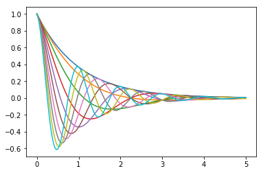

1. The Beginning¶
The White Rabbit put on his spectacles. ‘Where shall I begin, please your Majesty?’ he asked.
‘Begin at the beginning,’ the King said gravely, ‘and go on till you come to the end: then stop.’
1.1. Introduction¶
You have probably used computers to do all sorts of useful and interesting things. In each application, the computer responds in different ways to your input, from the keyboard, mouse or a file. Still the underlying operations are determined by the design of the program you are given. In this set of tutorials you will learn to write your own computer programs, so you can give the computer instructions to react in the way you want.
First let us place Python programming in the context of the computer hardware. At the most fundamental level in the computer there are instructions built into the hardware. These are very simple instructions, peculiar to the hardware of your particular type of computer. The instructions are designed to be simple for the hardware to execute, not for humans to follow. The earliest programming was done with such instructions. If was difficult and error-prone. A major advance was the development of higher-level languages and translators for them. Higher-level languages allow computer programmers to write instructions in a format that is easier for humans to understand. For example
z = x+y
is an instruction in many high-level languages that means something like:
Access the value stored at a location labeled x Calculate the sum of this value and the value stored at a location labeled y Store the result in a location labeled z.
No computer understands the high-level instruction directly; it is not in machine language. A special program must first translate instructions like this one into machine language. This one high-level instruction might be translated into a sequence of three machine language instructions corresponding to the three step description above:
0000010010000001 0000000010000010 0000010110000011
Obviously high-level languages were a great advance in clarity!
If you follow a broad introduction to computing, you will learn more about the layers that connect low-level digital computer circuits to high-level languages.
There are many high-level languages. The language you will be learning is Python. Python is one of the easiest languages to learn and use, while at the same time being very powerful: It is one of the most used languages by highly productive professional programmers. Also Python is a free language! If you have your own computer, you can download it from the Internet….
import pandas;
for i in range(6):
print(i)
1.2. Your Development Environment¶
At a minimum only the Python interpreter is needed to run a simple program. You can check whether an interpreter is availble in your computer by just entering the command python in the command shell (CMD in Windows). Below are typical outputs from Windows, Mac OS and Linux:
$ python Python 2.7.16 (default, Oct 10 2019, 22:02:15) [GCC 8.3.0] on linux2 Type “help”, “copyright”, “credits” or “license” for more information. >>>
As you can see the Linux machine has Python 2 whereas Windows and Mac OS are on Python 3. But for simple programs the version doesn’t matter. Create the ubiquitous “Hello World!” program in any text editer and run it through Python.
The ubiquotous “Hello World!” Created by Mr John Doe, 23 August 2020
print(“Hello World!”)
$ python helloworld.py Hello World!
1.3. (Scalar) Variables and Operators¶
Python directly recognizes a variety of types of data. Here are a few:
Numbers: 3, 125, -8, 2.25
Character strings: ‘Hi’, ‘Doe, John ‘
Boolean variable: TRUE, FALSE
- Therefore if you just write:
size_of_the_class = 8 air_temperatur = 13.5 candidate = ‘Doe, John’ raining = FALSE
Python recognizes their types and allocate memory differently. You can always ask Python their types through the built-in funtion type().
type(size_of_the_class)
>>> type(7)
<class 'int'>
>>>
Python abbreviates integers as int
type(air_temperature)
Note the name in the last result is float, not real or decimal, coming from the term “floating point”, for reasons that will be explained later, in Floats, Division, Mixed Types.
type(‘candidate’)
In your last result you see another abbreviation: str rather than string. Enter
str(23) int(‘125’)
Note the presence and absence of quotes.